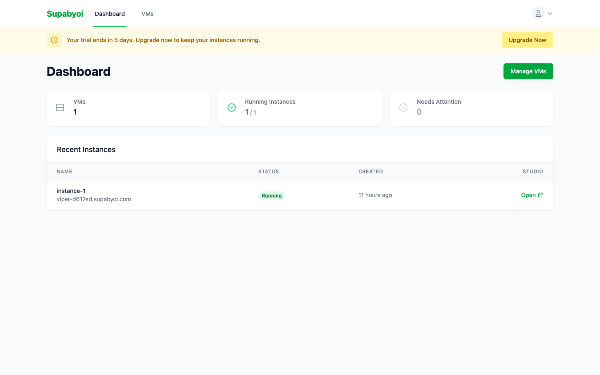

How Deployment Works
Everything that happens when you click "Deploy" — from agent installation to a live Supabase instance on your VM.
What Gets Deployed
Each instance runs 8 Docker services that form a complete, self-contained Supabase stack on your VM.
PostgreSQL
The core database (v15)
Kong
API Gateway, routes all API traffic
PostgREST
Instant REST API from your database schema
GoTrue
Authentication and user management
Realtime
WebSocket connections for live data
Storage
S3-compatible file storage
Meta
Database management and metadata
Studio
Web-based database management UI
Deployment Steps
The deployment pipeline runs these steps in order. Each step is idempotent — safe to re-run if something goes wrong.
Agent Installation
A self-contained Go binary is uploaded to your VM via SFTP and moved into place. No runtime dependencies required — a single static binary handles everything.
Docker Setup
Docker Engine and Docker Compose are installed if not already present. The agent checks existing state before acting, so this step is skipped on VMs that already have Docker.
Nginx Configuration
An Nginx reverse proxy is configured to route incoming HTTPS traffic to your Supabase services. Each instance gets its own isolated virtual host configuration.
Stack Launch
All 8 services are started together via docker compose up -d. Ports are dynamically allocated to avoid conflicts with other instances on the same VM.
Health Checks
Each service is polled until it reports healthy. PostgreSQL initialization (which runs database setup scripts) typically takes around 2 minutes. The deployment waits patiently with a 10-minute overall timeout.
TLS Provisioning
A Cloudflare Origin CA wildcard certificate (*.supabyoi.com) is installed for HTTPS. Valid for 15 years — no renewal needed. Nginx is reconfigured to serve traffic over TLS.
DNS Setup
Two DNS records are created via the Cloudflare API: {name}.supabyoi.com for the API, and studio-{name}.supabyoi.com for Studio. Both are proxied through Cloudflare.
Instance Ready
The instance is marked as running. Your API URL, Studio URL, database connection string, and all credentials become available in the dashboard.
Real-time Logs
Deployment progress streams live to your browser, updating every 2 seconds. Each step shows its current status:
The log panel updates automatically — no need to refresh the page. Structured progress events are emitted for each step, streamed back through the SSH connection, and stored as deployment log rows in the database.
Retry Deployments
Deployments can fail for transient reasons — network blips, slow VM boot, package mirror timeouts. Supabyoi handles this automatically and manually.
Automatic Retries
Failed deployments are automatically retried up to 3 times with exponential backoff. The system waits between attempts to give transient issues time to resolve.
Manual Retry
Click Retry Deployment on the instance detail page. This resets the instance status to pending, clears existing logs, and re-runs the full deployment pipeline from the beginning.
10-minute overall timeout
Each deployment attempt has a hard 10-minute deadline. If the full stack has not come up healthy within that window, the attempt is marked as failed and the next retry begins.
Instance Endpoints
After a successful deployment, three connection points are available from the instance dashboard.
API URL
https://{name}.supabyoi.com
Use this as your Supabase URL in client SDKs. Routes to REST (PostgREST), Auth (GoTrue), Storage, and Realtime via Kong.
Studio
https://studio-{name}.supabyoi.com
Web UI for managing your database — table editor, SQL editor, auth users, storage buckets, and more.
Database
postgresql://postgres:{password}@{vm-ip}:{port}/postgres
Direct PostgreSQL connection string. Shown in the instance dashboard after deployment. Use with psql, database GUIs, or migration tools.